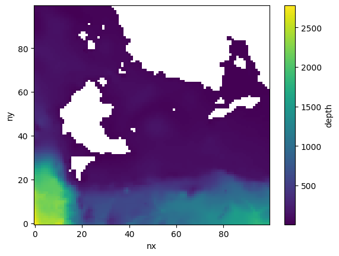

Set up a rectangular regional CESM-MOM6 run
A typical workflow of utilizing CrocoDash consists of four main steps:
Generate a regional MOM6 domain.
Create the CESM case.
Prepare ocean forcing data.
Build and run the case.
SECTION 1: Generate a regional MOM6 domain
We begin by defining a regional MOM6 domain using CrocoDash. To do so, we first generate a horizontal grid. We then generate the topography by remapping an existing bathymetric dataset to our horizontal grid. Finally, we define a vertical grid.
Step 1.1: Horizontal Grid
[1]:
from CrocoDash.grid import Grid
grid = Grid(
resolution = 0.01,
xstart = 278.0,
lenx = 1.0,
ystart = 7.0,
leny = 1.0,
name = "panama1",
)
Step 1.2: Topography
[2]:
from CrocoDash.topo import Topo
topo = Topo(
grid = grid,
min_depth = 9.5,
)
[ ]:
bathymetry_path='s3://crocodile-cesm/CrocoDash/data/gebco/GEBCO_2024.zarr/'
topo.interpolate_from_file(
file_path = bathymetry_path,
longitude_coordinate_name="lon",
latitude_coordinate_name="lat",
vertical_coordinate_name="elevation"
)
If bathymetry setup fails, rerun this function with write_to_file = True
Begin regridding bathymetry...
Original bathymetry size: 1.85 Mb
Regridded size: 0.24 Mb
Automatic regridding may fail if your domain is too big! If this process hangs or crashes,make sure function argument write_to_file = True and,open a terminal with appropriate computational and resources try calling ESMF directly in the input directory None via
`mpirun -np NUMBER_OF_CPUS ESMF_Regrid -s bathymetry_original.nc -d bathymetry_unfinished.nc -m bilinear --src_var depth --dst_var depth --netcdf4 --src_regional --dst_regional`
For details see https://xesmf.readthedocs.io/en/latest/large_problems_on_HPC.html
Afterwards, we run the 'expt.tidy_bathymetry' method to skip the expensive interpolation step, and finishing metadata, encoding and cleanup.
Regridding successful! Now calling `tidy_bathymetry` method for some finishing touches...
setup bathymetry has finished successfully.
Tidy bathymetry: Reading in regridded bathymetry to fix up metadata...done. Filling in inland lakes and channels...
WARNING:urllib3.connectionpool:Connection pool is full, discarding connection: mdl-arco-geo-025.s3.waw3-1.cloudferro.com. Connection pool size: 10
WARNING:urllib3.connectionpool:Connection pool is full, discarding connection: mdl-arco-geo-025.s3.waw3-1.cloudferro.com. Connection pool size: 10
WARNING:urllib3.connectionpool:Connection pool is full, discarding connection: mdl-arco-geo-025.s3.waw3-1.cloudferro.com. Connection pool size: 10
WARNING:urllib3.connectionpool:Connection pool is full, discarding connection: mdl-arco-geo-025.s3.waw3-1.cloudferro.com. Connection pool size: 10
WARNING:urllib3.connectionpool:Connection pool is full, discarding connection: mdl-arco-geo-025.s3.waw3-1.cloudferro.com. Connection pool size: 10
WARNING:urllib3.connectionpool:Connection pool is full, discarding connection: mdl-arco-geo-025.s3.waw3-1.cloudferro.com. Connection pool size: 10
WARNING:urllib3.connectionpool:Connection pool is full, discarding connection: mdl-arco-geo-025.s3.waw3-1.cloudferro.com. Connection pool size: 10
WARNING:urllib3.connectionpool:Connection pool is full, discarding connection: mdl-arco-geo-025.s3.waw3-1.cloudferro.com. Connection pool size: 10
WARNING:urllib3.connectionpool:Connection pool is full, discarding connection: mdl-arco-geo-025.s3.waw3-1.cloudferro.com. Connection pool size: 10
WARNING:urllib3.connectionpool:Connection pool is full, discarding connection: mdl-arco-geo-025.s3.waw3-1.cloudferro.com. Connection pool size: 10
WARNING:urllib3.connectionpool:Connection pool is full, discarding connection: mdl-arco-geo-025.s3.waw3-1.cloudferro.com. Connection pool size: 10
WARNING:urllib3.connectionpool:Connection pool is full, discarding connection: mdl-arco-geo-025.s3.waw3-1.cloudferro.com. Connection pool size: 10
[5]:
topo.depth.plot()
[5]:
<matplotlib.collections.QuadMesh at 0x346dbeab0>

[6]:
# Erase Pacific & Canada Bays
%matplotlib ipympl
from CrocoDash.topo_editor import TopoEditor
topo.depth["units"] = "m"
TopoEditor(topo)
[6]:
Step 1.3: Vertical Grid
[7]:
from CrocoDash.vgrid import VGrid
vgrid = VGrid.hyperbolic(
nk = 75,
depth = topo.max_depth,
ratio=20.0
)
[8]:
print(vgrid.dz)
[ 3.65535122 3.67844102 3.7057838 3.73815846 3.77648469 3.82184774
3.87552721 3.93903041 4.01413088 4.10291266 4.20782073 4.33171814
4.47794994 4.65041395 4.85363759 5.0928596 5.37411432 5.70431463
6.09132815 6.54403859 7.07238132 7.68733883 8.40087798 9.2258073
10.17552982 11.26366612 12.50352475 13.90740505 15.48573221 17.24604754
19.19190787 21.32178462 23.62808815 26.09646895 28.70555098 31.42722598
34.22757583 37.06840024 39.90922464 42.70957449 45.43124949 48.04033152
50.50871232 52.81501585 54.9448926 56.89075293 58.65106826 60.22939542
61.63327572 62.87313435 63.96127066 64.91099317 65.73592249 66.44946164
67.06441915 67.59276188 68.04547232 68.43248585 68.76268615 69.04394087
69.28316289 69.48638652 69.65885053 69.80508234 69.92897974 70.03388781
70.12266959 70.19777006 70.26127326 70.31495273 70.36031578 70.39864201
70.43101667 70.45835946 70.48144925]
[9]:
import matplotlib.pyplot as plt
plt.close()
# Create the plot
for depth in vgrid.z:
plt.axhline(y=depth, linestyle='-') # Horizontal lines
plt.ylim(max(vgrid.z) + 10, min(vgrid.z) - 10) # Invert y-axis so deeper values go down
plt.ylabel("Depth")
plt.title("Vertical Grid")
plt.show()
SECTION 2: Create the CESM case
After generating the MOM6 domain, the next step is to create a CESM case using CrocoDash. This process is straightforward and involves instantiating the CrocoDash Case object. The Case object requires the following inputs:
CESM Source Directory: A local path to a compatible CESM source copy.
Case Name: A unique name for the CESM case.
Input Directory: The directory where all necessary input files will be written.
MOM6 Domain Objects: The horizontal grid, topography, and vertical grid created in the previous section.
Project ID: (Optional) A project ID, if required by the machine.
Step 2.1: Specify case name and directories:
Begin by specifying the case name and the necessary directory paths. Ensure the CESM root directory points to your own local copy of CESM. Below is an example setup:
[10]:
from pathlib import Path
[11]:
# CESM case (experiment) name
casename = "panama-1"
# CESM source root (Update this path accordingly!!!)
cesmroot ="/Users/manishrv/CrocoGallery/cesm"
# Place where all your input files go
inputdir = Path.home() / "croc_input" / casename
# CESM case directory
caseroot = Path.home() / "croc_cases" / casename
Step 2.2: Create the Case
To create the CESM case, instantiate the Case object as shown below. This will automatically set up the CESM case based on the provided inputs: The cesmroot argument specifies the path to your local CESM source directory. The caseroot argument defines the directory where the case will be created. CrocoDash will handle all necessary namelist modifications and XML changes to align with the MOM6 domain objects generated earlier.
[12]:
from CrocoDash.case import Case
import os
os.environ["CIME_MACHINE"] = "ubuntu-latest"
case = Case(
cesmroot = cesmroot,
caseroot = caseroot,
inputdir = inputdir,
ocn_grid = grid,
ocn_vgrid = vgrid,
ocn_topo = topo,
project = 'NCGD0011',
override = True,
machine = "ubuntu-latest"
)
INFO: csp_solver:CspSolver initialized.
Creating case...
• Updating ccs_config/modelgrid_aliases_nuopc.xml file to include the new resolution "panama-1" consisting of the following component grids.
atm grid: "TL319", lnd grid: "TL319", ocn grid: "panama1".
• Updating ccs_config/component_grids_nuopc.xml file to include newly generated ocean grid "panama1" with the following properties:
nx: 100, ny: 100. ocean mesh: /Users/manishrv/croc_input/panama-1/ocnice/ESMF_mesh_panama1_0a7340.nc.
Running the create_newcase tool with the following command:
/Users/manishrv/CrocoGallery/cesm/cime/scripts/create_newcase --compset 1850_DATM%JRA_SLND_SICE_MOM6_SROF_SGLC_SWAV --res panama-1 --case /Users/manishrv/croc_cases/panama-1 --machine ubuntu-latest --run-unsupported --project NCGD0011
The create_newcase command was successful.
Navigating to the case directory:
cd /Users/manishrv/croc_cases/panama-1
Apply NTASK grid xml changes:
./xmlchange NTASKS_OCN=128
Running the case.setup script with the following command:
./case.setup
Adding parameter changes to user_nl_mom:
! Custom Horizonal Grid, Topography, and Vertical Grid
INPUTDIR = /Users/manishrv/croc_input/panama-1/ocnice
TRIPOLAR_N = False
REENTRANT_X = False
REENTRANT_Y = False
NIGLOBAL = 100
NJGLOBAL = 100
GRID_CONFIG = mosaic
GRID_FILE = ocean_hgrid_panama1_0a7340.nc
TOPO_CONFIG = file
TOPO_FILE = ocean_topog_panama1_0a7340.nc
MAXIMUM_DEPTH = 2780.1300176568307
MINIMUM_DEPTH = 9.5
NK = 75
COORD_CONFIG = none
ALE_COORDINATE_CONFIG = FILE:ocean_vgrid_panama1_0a7340.nc
REGRIDDING_COORDINATE_MODE = Z*
! Timesteps (based on grid resolution)
DT = 25.0
DT_THERM = 100.0
INFO: stage:SUCCESS: All stages are complete.
Case created successfully at /Users/manishrv/croc_cases/panama-1.
To further customize, build, and run the case, navigate to the case directory in your terminal. To create another case, restart the notebook.
Section 3: Prepare ocean forcing data
We need to cut out our ocean forcing. The package expects an initial condition and one time-dependent segment per non-land boundary. Naming convention is "east_unprocessed" for segments and "ic_unprocessed" for the initial condition.
In this notebook, we are forcing with the Copernicus Marine “Glorys” reanalysis dataset. There’s a function in the CrocoDash package, called configure_forcings, that generates a bash script to download the correct boundary forcing files for your experiment. First, you will need to create an account with Copernicus, and then call copernicusmarine login to set up your login details on your machine. Then you can run the get_glorys_data.sh bash script.
Step 3.1 Configure Initial Conditions and Forcings
[13]:
case.configure_forcings(
date_range = ["2020-01-01 00:00:00", "2020-01-09 00:00:00"],
function_name="get_glorys_data_from_cds_api"
)
INFO - 2025-06-05T16:49:37Z - Selected dataset version: "202311"
INFO:copernicusmarine:Selected dataset version: "202311"
INFO - 2025-06-05T16:49:37Z - Selected dataset part: "default"
INFO:copernicusmarine:Selected dataset part: "default"
INFO - 2025-06-05T16:49:46Z - Starting download. Please wait...
INFO:copernicusmarine:Starting download. Please wait...
INFO - 2025-06-05T16:52:27Z - Successfully downloaded to /var/folders/s5/23r81yrs51q2rlvqmt_qdnl40000gp/T/tmpy0f_752v/test_file.nc
INFO:copernicusmarine:Successfully downloaded to /var/folders/s5/23r81yrs51q2rlvqmt_qdnl40000gp/T/tmpy0f_752v/test_file.nc
INFO - 2025-06-05T16:52:30Z - Selected dataset version: "202311"
INFO:copernicusmarine:Selected dataset version: "202311"
INFO - 2025-06-05T16:52:30Z - Selected dataset part: "default"
INFO:copernicusmarine:Selected dataset part: "default"
INFO - 2025-06-05T16:52:39Z - Starting download. Please wait...
INFO:copernicusmarine:Starting download. Please wait...
INFO - 2025-06-05T16:54:53Z - Successfully downloaded to /Users/manishrv/croc_input/panama-1/glorys/east_unprocessed.nc
INFO:copernicusmarine:Successfully downloaded to /Users/manishrv/croc_input/panama-1/glorys/east_unprocessed.nc
INFO - 2025-06-05T16:54:56Z - Selected dataset version: "202311"
INFO:copernicusmarine:Selected dataset version: "202311"
INFO - 2025-06-05T16:54:56Z - Selected dataset part: "default"
INFO:copernicusmarine:Selected dataset part: "default"
INFO - 2025-06-05T16:55:04Z - Starting download. Please wait...
INFO:copernicusmarine:Starting download. Please wait...
INFO - 2025-06-05T16:56:55Z - Successfully downloaded to /Users/manishrv/croc_input/panama-1/glorys/west_unprocessed.nc
INFO:copernicusmarine:Successfully downloaded to /Users/manishrv/croc_input/panama-1/glorys/west_unprocessed.nc
INFO - 2025-06-05T16:57:01Z - Selected dataset version: "202311"
INFO:copernicusmarine:Selected dataset version: "202311"
INFO - 2025-06-05T16:57:01Z - Selected dataset part: "default"
INFO:copernicusmarine:Selected dataset part: "default"
INFO - 2025-06-05T16:57:09Z - Starting download. Please wait...
INFO:copernicusmarine:Starting download. Please wait...
INFO - 2025-06-05T16:58:32Z - Successfully downloaded to /Users/manishrv/croc_input/panama-1/glorys/north_unprocessed.nc
INFO:copernicusmarine:Successfully downloaded to /Users/manishrv/croc_input/panama-1/glorys/north_unprocessed.nc
INFO - 2025-06-05T16:58:35Z - Selected dataset version: "202311"
INFO:copernicusmarine:Selected dataset version: "202311"
INFO - 2025-06-05T16:58:35Z - Selected dataset part: "default"
INFO:copernicusmarine:Selected dataset part: "default"
INFO - 2025-06-05T16:58:43Z - Starting download. Please wait...
INFO:copernicusmarine:Starting download. Please wait...
INFO - 2025-06-05T17:02:36Z - Successfully downloaded to /Users/manishrv/croc_input/panama-1/glorys/south_unprocessed.nc
INFO:copernicusmarine:Successfully downloaded to /Users/manishrv/croc_input/panama-1/glorys/south_unprocessed.nc
INFO - 2025-06-05T17:02:39Z - Selected dataset version: "202311"
INFO:copernicusmarine:Selected dataset version: "202311"
INFO - 2025-06-05T17:02:39Z - Selected dataset part: "default"
INFO:copernicusmarine:Selected dataset part: "default"
INFO - 2025-06-05T17:02:47Z - Starting download. Please wait...
INFO:copernicusmarine:Starting download. Please wait...
INFO - 2025-06-05T17:05:49Z - Successfully downloaded to /Users/manishrv/croc_input/panama-1/glorys/ic_unprocessed.nc
INFO:copernicusmarine:Successfully downloaded to /Users/manishrv/croc_input/panama-1/glorys/ic_unprocessed.nc
Step 3.3: Process forcing data
In this final step, we call the process_forcings method of CrocoDash to cut out and interpolate the initial condition as well as all boundaries. CrocoDash also updates MOM6 runtime parameters and CESM xml variables accordingly.
[14]:
case.process_forcings()
INFO:regional_mom6.regridding:Getting t points..
INFO:regional_mom6.regridding:Creating Regridder
INFO:regional_mom6.regridding:Creating Regridder
INFO:regional_mom6.regridding:Creating Regridder
Setting up Initial Conditions
Regridding Velocities...
INFO:regional_mom6.rotation:Getting rotation angle
INFO:regional_mom6.rotation:Calculating grid rotation angle
INFO:regional_mom6.regridding:Getting u points..
INFO:regional_mom6.regridding:Getting v points..
Done.
Regridding Tracers... Done.
Regridding Free surface... Done.
Saving outputs...
INFO:regional_mom6.regridding:Creating coordinates of the boundary q/u/v points
INFO:regional_mom6.regridding:Creating Regridder
INFO:regional_mom6.rotation:Getting rotation angle
INFO:regional_mom6.rotation:Calculating grid rotation angle
INFO:regional_mom6.regridding:Creating coordinates of the boundary q/u/v points
INFO:regional_mom6.regridding:Filling in missing data horizontally, then vertically
INFO:regional_mom6.regridding:Adding time dimension
INFO:regional_mom6.regridding:Renaming vertical coordinate to nz_... in salt_segment_001
INFO:regional_mom6.regridding:Replacing old depth coordinates with incremental integers
INFO:regional_mom6.regridding:Adding perpendicular dimension to salt_segment_001
INFO:regional_mom6.regridding:Renaming vertical coordinate to nz_... in temp_segment_001
INFO:regional_mom6.regridding:Replacing old depth coordinates with incremental integers
INFO:regional_mom6.regridding:Adding perpendicular dimension to temp_segment_001
INFO:regional_mom6.regridding:Renaming vertical coordinate to nz_... in u_segment_001
INFO:regional_mom6.regridding:Replacing old depth coordinates with incremental integers
INFO:regional_mom6.regridding:Adding perpendicular dimension to u_segment_001
INFO:regional_mom6.regridding:Renaming vertical coordinate to nz_... in v_segment_001
INFO:regional_mom6.regridding:Replacing old depth coordinates with incremental integers
INFO:regional_mom6.regridding:Adding perpendicular dimension to v_segment_001
INFO:regional_mom6.regridding:Adding perpendicular dimension to eta_segment_001
WARNING:regional_mom6.regridding:All NaNs filled b/c bathymetry wasn't provided to the function. Add bathymetry_path to the segment class to avoid this
INFO:regional_mom6.regridding:Generating encoding dictionary
INFO:regional_mom6.regridding:Creating coordinates of the boundary q/u/v points
INFO:regional_mom6.regridding:Creating Regridder
INFO:regional_mom6.rotation:Getting rotation angle
INFO:regional_mom6.rotation:Calculating grid rotation angle
INFO:regional_mom6.regridding:Creating coordinates of the boundary q/u/v points
INFO:regional_mom6.regridding:Filling in missing data horizontally, then vertically
INFO:regional_mom6.regridding:Adding time dimension
INFO:regional_mom6.regridding:Renaming vertical coordinate to nz_... in salt_segment_002
INFO:regional_mom6.regridding:Replacing old depth coordinates with incremental integers
INFO:regional_mom6.regridding:Adding perpendicular dimension to salt_segment_002
INFO:regional_mom6.regridding:Renaming vertical coordinate to nz_... in temp_segment_002
INFO:regional_mom6.regridding:Replacing old depth coordinates with incremental integers
INFO:regional_mom6.regridding:Adding perpendicular dimension to temp_segment_002
INFO:regional_mom6.regridding:Renaming vertical coordinate to nz_... in u_segment_002
INFO:regional_mom6.regridding:Replacing old depth coordinates with incremental integers
INFO:regional_mom6.regridding:Adding perpendicular dimension to u_segment_002
INFO:regional_mom6.regridding:Renaming vertical coordinate to nz_... in v_segment_002
INFO:regional_mom6.regridding:Replacing old depth coordinates with incremental integers
INFO:regional_mom6.regridding:Adding perpendicular dimension to v_segment_002
INFO:regional_mom6.regridding:Adding perpendicular dimension to eta_segment_002
WARNING:regional_mom6.regridding:All NaNs filled b/c bathymetry wasn't provided to the function. Add bathymetry_path to the segment class to avoid this
INFO:regional_mom6.regridding:Generating encoding dictionary
INFO:regional_mom6.regridding:Creating coordinates of the boundary q/u/v points
INFO:regional_mom6.regridding:Creating Regridder
INFO:regional_mom6.rotation:Getting rotation angle
INFO:regional_mom6.rotation:Calculating grid rotation angle
done setting up initial condition.
Processing south boundary velocity & tracers...Done.
Processing north boundary velocity & tracers...Done.
Processing west boundary velocity & tracers...
INFO:regional_mom6.regridding:Creating coordinates of the boundary q/u/v points
INFO:regional_mom6.regridding:Filling in missing data horizontally, then vertically
INFO:regional_mom6.regridding:Adding time dimension
INFO:regional_mom6.regridding:Renaming vertical coordinate to nz_... in salt_segment_003
INFO:regional_mom6.regridding:Replacing old depth coordinates with incremental integers
INFO:regional_mom6.regridding:Adding perpendicular dimension to salt_segment_003
INFO:regional_mom6.regridding:Renaming vertical coordinate to nz_... in temp_segment_003
INFO:regional_mom6.regridding:Replacing old depth coordinates with incremental integers
INFO:regional_mom6.regridding:Adding perpendicular dimension to temp_segment_003
INFO:regional_mom6.regridding:Renaming vertical coordinate to nz_... in u_segment_003
INFO:regional_mom6.regridding:Replacing old depth coordinates with incremental integers
INFO:regional_mom6.regridding:Adding perpendicular dimension to u_segment_003
INFO:regional_mom6.regridding:Renaming vertical coordinate to nz_... in v_segment_003
INFO:regional_mom6.regridding:Replacing old depth coordinates with incremental integers
INFO:regional_mom6.regridding:Adding perpendicular dimension to v_segment_003
INFO:regional_mom6.regridding:Adding perpendicular dimension to eta_segment_003
WARNING:regional_mom6.regridding:All NaNs filled b/c bathymetry wasn't provided to the function. Add bathymetry_path to the segment class to avoid this
INFO:regional_mom6.regridding:Generating encoding dictionary
INFO:regional_mom6.regridding:Creating coordinates of the boundary q/u/v points
INFO:regional_mom6.regridding:Creating Regridder
INFO:regional_mom6.rotation:Getting rotation angle
INFO:regional_mom6.rotation:Calculating grid rotation angle
INFO:regional_mom6.regridding:Creating coordinates of the boundary q/u/v points
INFO:regional_mom6.regridding:Filling in missing data horizontally, then vertically
INFO:regional_mom6.regridding:Adding time dimension
INFO:regional_mom6.regridding:Renaming vertical coordinate to nz_... in salt_segment_004
INFO:regional_mom6.regridding:Replacing old depth coordinates with incremental integers
INFO:regional_mom6.regridding:Adding perpendicular dimension to salt_segment_004
INFO:regional_mom6.regridding:Renaming vertical coordinate to nz_... in temp_segment_004
INFO:regional_mom6.regridding:Replacing old depth coordinates with incremental integers
INFO:regional_mom6.regridding:Adding perpendicular dimension to temp_segment_004
INFO:regional_mom6.regridding:Renaming vertical coordinate to nz_... in u_segment_004
INFO:regional_mom6.regridding:Replacing old depth coordinates with incremental integers
INFO:regional_mom6.regridding:Adding perpendicular dimension to u_segment_004
INFO:regional_mom6.regridding:Renaming vertical coordinate to nz_... in v_segment_004
INFO:regional_mom6.regridding:Replacing old depth coordinates with incremental integers
INFO:regional_mom6.regridding:Adding perpendicular dimension to v_segment_004
INFO:regional_mom6.regridding:Adding perpendicular dimension to eta_segment_004
WARNING:regional_mom6.regridding:All NaNs filled b/c bathymetry wasn't provided to the function. Add bathymetry_path to the segment class to avoid this
INFO:regional_mom6.regridding:Generating encoding dictionary
Done.
Processing east boundary velocity & tracers...Done.
Adding parameter changes to user_nl_mom:
! Initial conditions
INIT_LAYERS_FROM_Z_FILE = True
TEMP_SALT_Z_INIT_FILE = init_tracers.nc
Z_INIT_FILE_PTEMP_VAR = temp
Z_INIT_ALE_REMAPPING = True
TEMP_SALT_INIT_VERTICAL_REMAP_ONLY = True
DEPRESS_INITIAL_SURFACE = True
SURFACE_HEIGHT_IC_FILE = init_eta.nc
SURFACE_HEIGHT_IC_VAR = eta_t
VELOCITY_CONFIG = file
VELOCITY_FILE = init_vel.nc
! Open boundary conditions
OBC_NUMBER_OF_SEGMENTS = 4
OBC_FREESLIP_VORTICITY = False
OBC_FREESLIP_STRAIN = False
OBC_COMPUTED_VORTICITY = True
OBC_COMPUTED_STRAIN = True
OBC_ZERO_BIHARMONIC = True
OBC_TRACER_RESERVOIR_LENGTH_SCALE_OUT = 3.0E+04
OBC_TRACER_RESERVOIR_LENGTH_SCALE_IN = 3000.0
BRUSHCUTTER_MODE = True
OBC_SEGMENT_001 = "J=0,I=0:N,FLATHER,ORLANSKI,NUDGED,ORLANSKI_TAN,NUDGED_TAN"
OBC_SEGMENT_001_VELOCITY_NUDGING_TIMESCALES = 0.3, 360.0
OBC_SEGMENT_001_DATA = "U=file:forcing_obc_segment_001.nc(u),V=file:forcing_obc_segment_001.nc(v),SSH=file:forcing_obc_segment_001.nc(eta),TEMP=file:forcing_obc_segment_001.nc(temp),SALT=file:forcing_obc_segment_001.nc(salt)"
OBC_SEGMENT_002 = "J=N,I=N:0,FLATHER,ORLANSKI,NUDGED,ORLANSKI_TAN,NUDGED_TAN"
OBC_SEGMENT_002_VELOCITY_NUDGING_TIMESCALES = 0.3, 360.0
OBC_SEGMENT_002_DATA = "U=file:forcing_obc_segment_002.nc(u),V=file:forcing_obc_segment_002.nc(v),SSH=file:forcing_obc_segment_002.nc(eta),TEMP=file:forcing_obc_segment_002.nc(temp),SALT=file:forcing_obc_segment_002.nc(salt)"
OBC_SEGMENT_003 = "I=0,J=N:0,FLATHER,ORLANSKI,NUDGED,ORLANSKI_TAN,NUDGED_TAN"
OBC_SEGMENT_003_VELOCITY_NUDGING_TIMESCALES = 0.3, 360.0
OBC_SEGMENT_003_DATA = "U=file:forcing_obc_segment_003.nc(u),V=file:forcing_obc_segment_003.nc(v),SSH=file:forcing_obc_segment_003.nc(eta),TEMP=file:forcing_obc_segment_003.nc(temp),SALT=file:forcing_obc_segment_003.nc(salt)"
OBC_SEGMENT_004 = "I=N,J=0:N,FLATHER,ORLANSKI,NUDGED,ORLANSKI_TAN,NUDGED_TAN"
OBC_SEGMENT_004_VELOCITY_NUDGING_TIMESCALES = 0.3, 360.0
OBC_SEGMENT_004_DATA = "U=file:forcing_obc_segment_004.nc(u),V=file:forcing_obc_segment_004.nc(v),SSH=file:forcing_obc_segment_004.nc(eta),TEMP=file:forcing_obc_segment_004.nc(temp),SALT=file:forcing_obc_segment_004.nc(salt)"
./xmlchange RUN_STARTDATE=2020-01-01
./xmlchange MOM6_MEMORY_MODE=dynamic_symmetric
Case is ready to be built: /Users/manishrv/croc_cases/panama-1
Section 4: Build and run the case
After completing the previous steps, you are ready to build and run your CESM case. Begin by navigating to the case root directory specified during the case creation. Before proceeding, review the user_nl_mom file located in the case directory. This file contains MOM6 parameter settings that were automatically generated by CrocoDash. Carefully examine these parameters and make any necessary adjustments to fine-tune the model for your specific requirements. While CrocoDash aims to provide a
solid starting point, further tuning and adjustments are typically necessary to improve the model for your use case.
Once you have reviewed and modified the parameters as needed, you can build and execute the case using the following commands:
./case.build
./case.submit